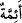
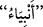
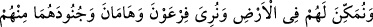
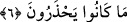
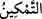
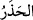

uyulan imamlar, önderler yapalım, demektir. Keşfü’l-esrâr’da “__WORD__ kelimesi
olarak tefsir edilmiştir. Yâni onları peygamberler kılmak istiyoruz, demektir. Mûsâ ve
Îsâ (a.s.) arasında İsrâiloğullarından bin kadar peygamber gelip geçmiştir.
“Ve onları” Firavun ve kavminin mülkündeki herşeye “vâris kılmak istiyorduk.”
Verâset kavramı zaman itibariyle önce olduğu halde, imâmetten sonra zikredilmiştir.
Bunun sebebi verâsetin, imâmet rütbesinden daha aşağı bir mertebede olmasıdır.
6. Ve o yerde onları hâkim kılmak; Firavun ile Hâmân’a ve ordularına, onlardan
(İsrailoğullarından gelecek diye) korktukları şeyi göstermek (istiyorduk).
“Ve o yerde onları hâkim kılmak (istiyorduk)”
“__WORD__ kelimesinin asıl anlamı; bir yeri herhangi bir şey için mekan kılmak ve orada
yerleşmek demektir. Sonra istiâre yoluyla “musallat kılma” anlamında kullanılmıştır.
Yani, “Biz onları Mısır ve Şâm diyarına musallat kılalım; orada istedikleri şekilde
tasarruf etsinler” mânâsına gelir.
“Firavun ile” veziri “Hâmân’a ve ordularına,” askerlerine, “onlardan” yâni
ezdikleri ve hakârete mâruz bıraktıkları zümreden “korktukları” ve İsrâiloğullarından
doğacak bir çocuğun elinde mülklerinin elden çıkmasından ve kendilerinin de helâk
olmasından endişe edip buna karşı da önlem anlamaya çalıştıkları “şeyi göstermek
(istiyorduk).”
el-Müfredât’da kaydedildiğine göre “__WORD__ kelimesi korkulan bir şeyden sakınmak ve
kaçınmak anlamına gelir.
Kâşifî der ki: (Firavun ve veziri Hâmân) denizde boğulacaklarının işâretlerini görüp
İsrailoğullarının da deniz sâhilinde gezindiklerini görünce, kendilerinin zulüm ve haddi
aşma sebebiyle mağlup olarak Allah’ın gazabına uğradıklarını; mazlum ve zavallıların
ise murâdlarına ererek gâlip ve muzaffer olduklarını anladılar. Aynı şekilde “mazlumun
zâlim üzerine gâlibiyetinin zâlimin mazlum üzerine gâlibiyetinden daha şiddetli
olduğu”nun sırrını da açıkça bilmiş ve görmüş oldular.
Ey zâlim, o kara günü düşün!
Zulmün uğursuzluğu sebebiyle seni
Sâhip olduğun makamından alıp
İndirip atarlar bir kuyuya
Şimdi hakaretle baktığın kimse